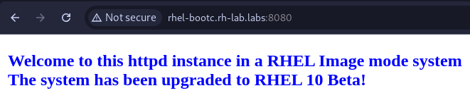
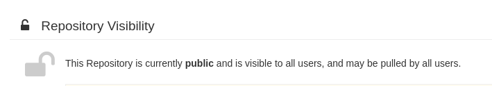

Use Case - Upgrading a VM based on a bootc image
In this example, we want to add some bits to the previously generated httpd image to upgrade the system from RHEL 9.7 to RHEL 10.1.
We will then use bootc to manage the system upgrade, and you will see how easy and fast perfoming upgrades is.
The Containerfile in this example will:
- Customize the index file
- Customizes the Message of the day
Review Containerfile.upgrade
FROM registry.redhat.io/rhel10/rhel-bootc:10.1
RUN dnf -y install tmux mkpasswd
RUN pass=$(mkpasswd --method=SHA-512 --rounds=4096 redhat) && useradd -m -G wheel bootc-user -p $pass
RUN echo "%wheel ALL=(ALL) NOPASSWD: ALL" > /etc/sudoers.d/wheel-sudo
RUN dnf -y install httpd && \
systemctl enable httpd && \
mv /var/www /usr/share/www && \
sed -ie 's,/var/www,/usr/share/www,' /etc/httpd/conf/httpd.conf && \
mkdir -p /var/log/httpd
COPY files/index.html /usr/share/www/html/index.html
RUN echo "This is a RHEL 10.1 VM installed using a bootable container as source!" > /etc/motd.d/10-first-setup.motd
RUN echo "This server is now running on RHEL 10 after the latest upgrade." > /etc/motd.d/20-upgrade.motd
EXPOSE 80
Building the image
From the root folder of the repository, switch to the use case directory:
You can build the image right from the Containerfile using Podman:
Testing the image
You can now test it using:
Note: The "-p 8080:80" part forwards the container's http port to the port 8080 on the host to test that httpd is working.
The container will now start and a login prompt will appear.
Testing Apache
On another terminal tab or in your browser, you can verify that the httpd server is working and serving traffic.
Terminal
Browser

Tagging and pushing the image
To tag and push the image you can simply run (replace YOURQUAYUSERNAME with the account name):
Log-in to Quay.io:
And push the image:
You can now browse to https://quay.io/repository/YOURQUAYUSERNAME/rhel-bootc-httpd?tab=settings and ensure that the repository is set to "Public".

Updating the VM with the newly created image
The first thing to do is logging in the VM created in the previous use case or any other use case (QCOW, ISO, AMI):
~ ▓▒░ ssh bootc-user@192.168.124.16
bootc-user@192.168.124.16's password:
This is a RHEL 9.7 VM installed using a bootable container as an rpm-ostree source!
Last login: Mon Jul 29 12:03:40 2024 from 192.168.124.1
[bootc-user@localhost ~]$
Verify that bootc is installed:
[bootc-user@localhost ~]$ bootc --help
Deploy and transactionally in-place with bootable container images.
The `bootc` project currently uses ostree-containers as a backend to support a model of bootable container images. Once installed, whether directly via `bootc install` (executed as part of a container) or via another mechanism such as an OS installer tool, further upgrades can be pulled via e.g. `bootc upgrade`.
Changes in `/etc` and `/var` persist.
Usage: bootc <COMMAND>
Commands:
upgrade Download and queue an upgraded container image to apply
switch Target a new container image reference to boot
edit Apply full changes to the host specification
status Display status
usr-overlay Add a transient writable overlayfs on `/usr` that will be discarded on reboot
install Install the running container to a target
help Print this message or the help of the given subcommand(s)
Options:
-h, --help Print help (see a summary with '-h')
Note that among the options we have the upgrade option that we will be using in this use case. The upgrade option allows checking, fetching and using any upgraded container image corresponding to the imagename:tag we used, in this case quay.io/YOURQUAYUSERNAME/rhel-bootc-vm:httpd
The upgrade command requires higher privileges to run, let's perform the upgrade!
[bootc-user@localhost ~]$ sudo bootc upgrade
layers already present: 2; layers needed: 71 (1.5 GB)
Fetching layers ████████████████████ 71/71
└ Fetching ████████████████████ 240 B/240 B (0 B/s) layer 3f31bbba8d765173de253
Fetched layers: 1.39 GiB in 3 minutes (6.93 MiB/
Queued for next boot: quay.io/kubealex/rhel-image-mode-demo:app
Version: 10.20250116.0
Digest: sha256:4cf5180c3586eaf352661e05399ff23a9a2e021a98acefaabd83b0e991dd21b3
Total new layers: 73 Size: 1.5 GB
Removed layers: 78 Size: 1.5 GB
Added layers: 71 Size: 1.5 GB
As you can see, at the beginning it performs a comparison between the actual rpm-ostree image that the system is booted from and the new image, fetching only the additional layer corresponding to the upgrades introduced during the last build.
Proceed with a reboot:
Let's log back in!
~ ▓▒░ ssh bootc-user@192.168.122.19
bootc-user@192.168.122.19's password:
This is a RHEL 10.1 VM installed using a bootable container as source!
This server is now running on RHEL 10 after the latest upgrade.
Last login: Mon Feb 24 12:15:42 2025 from 192.168.122.1
[bootc-user@localhost ~]$
You can already see that something changed, we have a new line in our message of the day, let's check the OS version:
[bootc-user@localhost ~]$ cat /etc/os-release
NAME="Red Hat Enterprise Linux"
VERSION="10.1 (Coughlan)"
ID="rhel"
ID_LIKE="centos fedora"
VERSION_ID="10.1"
PLATFORM_ID="platform:el10"
PRETTY_NAME="Red Hat Enterprise Linux 10.1 (Coughlan)"
ANSI_COLOR="0;31"
LOGO="fedora-logo-icon"
CPE_NAME="cpe:/o:redhat:enterprise_linux:10::baseos"
HOME_URL="https://www.redhat.com/"
VENDOR_NAME="Red Hat"
VENDOR_URL="https://www.redhat.com/"
DOCUMENTATION_URL="https://access.redhat.com/documentation/en-us/red_hat_enterprise_linux/10"
BUG_REPORT_URL="https://issues.redhat.com/"
REDHAT_BUGZILLA_PRODUCT="Red Hat Enterprise Linux 10"
REDHAT_BUGZILLA_PRODUCT_VERSION=10.1
REDHAT_SUPPORT_PRODUCT="Red Hat Enterprise Linux"
REDHAT_SUPPORT_PRODUCT_VERSION="10.1"
Here we go, our image is upgraded and fully working. Of course we can use the new image to provision similar VMs that need the same pieces of software on them.